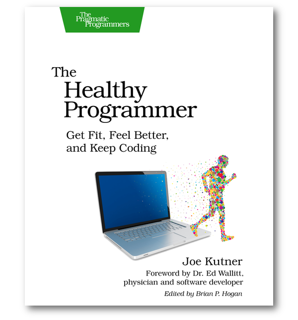

"The Healthy Programmer is not a frivolous book. It's not a book that describes fad diets or questionable exercise routines. On the contrary, the thing that impressed me right away about this book was how much it's based on solid scientific research."
-- Sandra Henry-Stocker, IT World
Read the Review

"[The Healthy Programmer] may be a life changing book, and should find its rightful place on every programmer's desk."
-- Ben Rothke, on Slashdot
Read the Review
In this book, you'll learn how adding a small amount of activity to your day that can reduce your risk for heart disease, diabetes, and obesity. It can also prevent back pain, carpal tunnel syndrome and many other common sources of pain for programmers. You'll learn how to integrate this activity into your day without even going to the gym.
Your health affects your ability to learn, remember, concentrate and be creative. These skills are critical to your job, but do you know how exercise and diet can improve them? You use your brain to write code, but you can also use your body to power your brain.
You'll also learn how to inspire the people around you to get healthy too. This is good for them, but also benefits you by creating the best fitness tool in the world: a partner. You'll learn some activities you can organize with co-workers and why these can be better than working out alone.